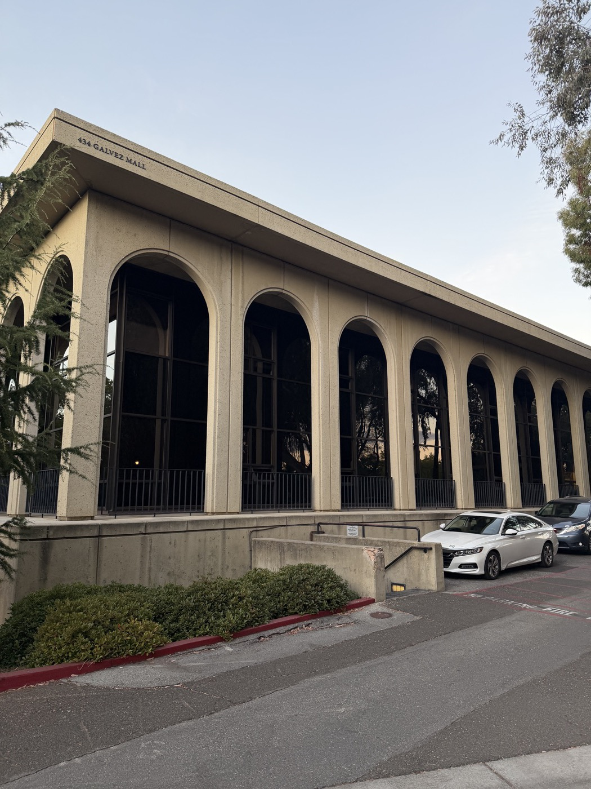

Namwook Lee
CS 180 · Computer Vision & Computational Photography · UC Berkeley
Intro
Studies CS 180 at UC Berkeley — Fall 2026
Shoots on an iPhone 17 Pro — 24 mm main, 151 mm telephoto
Projects Each one is posted as its own feed.

Project 0: Becoming Friends with Your Camera
Perspective, focal length, and the center of projection — a selfie shot two ways, Stanford architecture flattened, and a dolly zoom.
Project 1
This row fills in once the next assignment is released.
Project 2
This row fills in once the next assignment is released.
Nothing here matches your search.